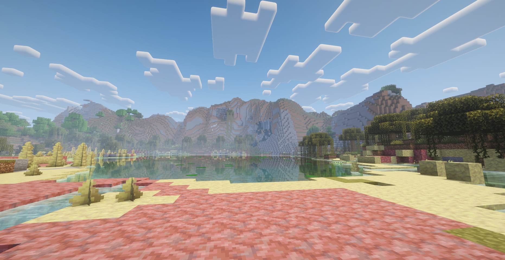
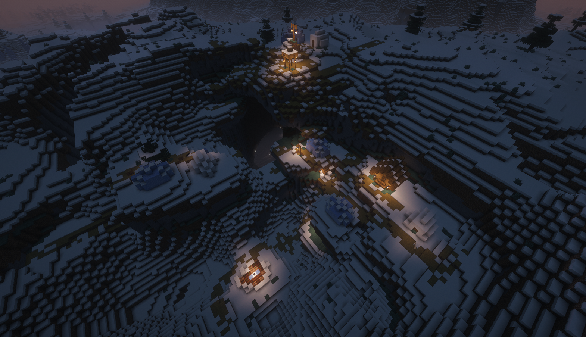
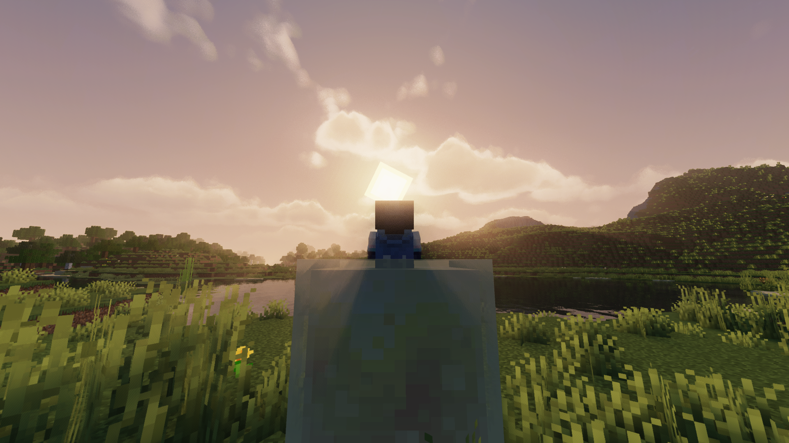
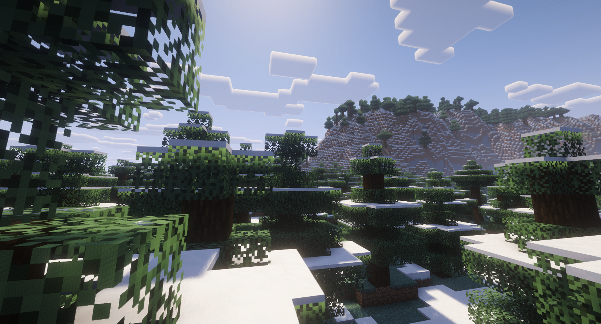
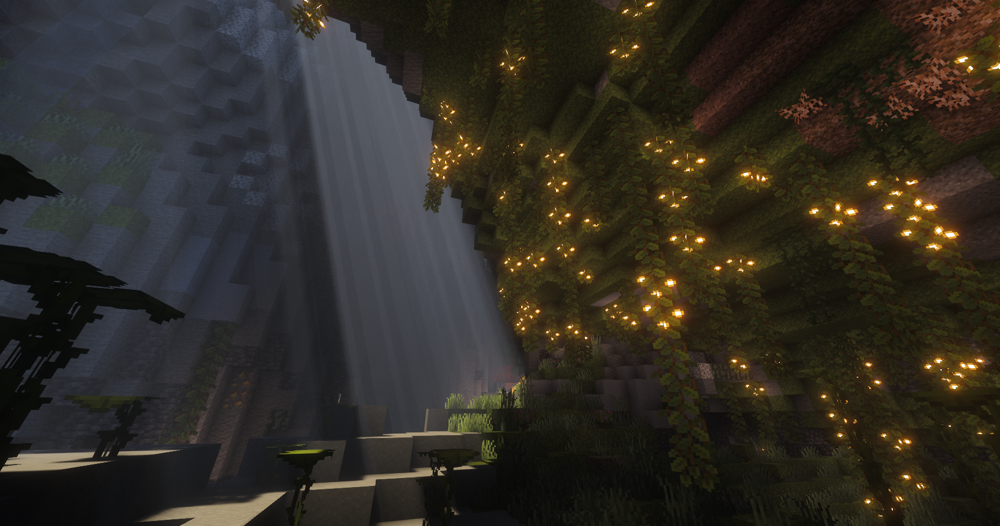
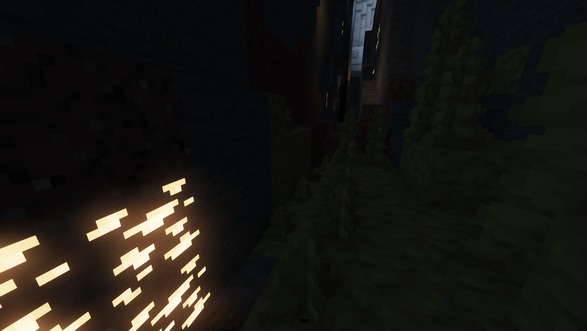
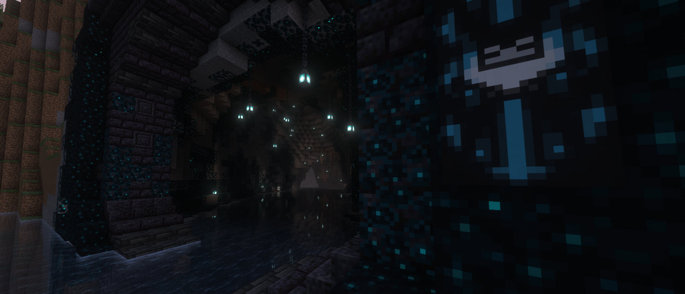
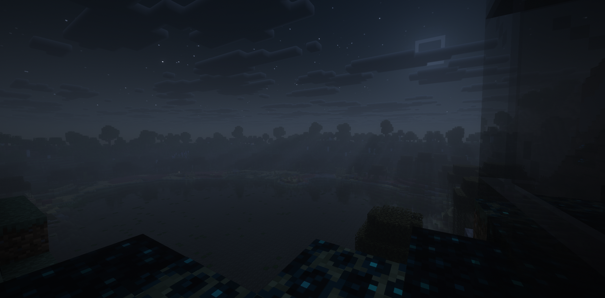

Java + Bedrock cross-play, live now
A heavily optimized Paper 1.26.2 world with a full custom economy, bilingual announcements, and a community that actually talks to each other — in voice chat, Discord, or in-game.
01 — connect
Both editions play on the same world through Geyser, so it doesn't matter which one your friends run.
tissues-paints.tun.ply.gg:33853
tissues-invented.tun.ply.gg:33862
02 — the world
Everything below is running live, tuned by the owners and built on a custom plugin stack.
Our in-house economy suite: shards as currency, kill/death tracking, ranked duels, a player-run order market and scheduled FFA events.
The custom CookieSMP plugin broadcasts announcements in Spanish and English, with a per-player GUI to set a personal language.
Geyser support means Bedrock players join the exact same survival world as Java players — no separate server, no separate economy.
Proximity voice chat in-world, for parties, raids, and yelling at creepers in real time.
AuthMe-backed authentication keeps accounts locked down before anyone sets foot in the world.
A full Discord bot and file-manager infrastructure keeps chat, announcements and server files in sync with the community.
03 — the world, in screenshots
Straight off the server, shaders and all — more going up as people send them in.







